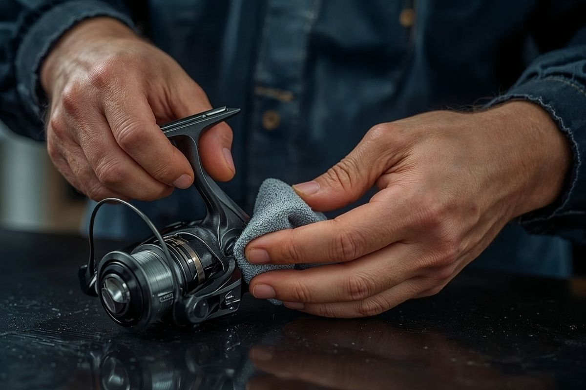
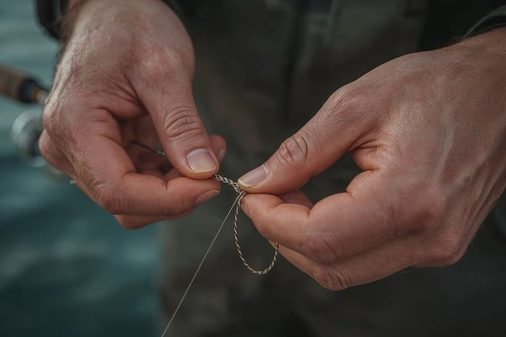

Sıfırdan başla, temel adımları and aksiyon mühendisliğini çözerek hızla geliş kanka.
LRF (Light Rock Fishing), hafif ekipmanlarla kayalık ve taşlık kıyılarda küçük-orta boy balıkları avlamaya dayanan bir olta balıkçılığı dalıdır. Japonya'dan dünyaya yayılan bu stil, hem yeni başlayanlar hem de deneyimli balıkçılar için son derece keyiflidir. Ekipman maliyeti düşük, öğrenme eğrisi kısa ve her yaşa uygundur.
2.000–4.000 TL ile eksiksiz bir başlangıç seti kurulabilir. Her bütçeye uygun predatör çözümler mevcuttur.
Temel teknikleri birkaç seansta kavrayabilirsin. Pratik yaparak ve aksiyon mühendisliğini çözerek hızla gelişirsin.
Türkiye'nin tüm sahillerinde, liman içlerinde, kayalıklarda ve taşlık meralarda sıfır hata riskli uygulanabilir.
Çocuktan yetişkine herkes keyifle yapabilir. Hafif ve narin takım yapısı sayesinde yorgunluk ebediyen felç edilir!

İlk adım, setini doğru bir şekilde bir araya getirmektir. Makara oltaya takılır, misina makaraya sarılır ve shock leader bağlanır. Bu işlemleri bir kez öğrenince her seferinde 5 dakikada tamamlarsın.

Balıkçılıkta en sık yaşanan hayal kırıklığı kopan misinalardır. Doğru düğüm bilmek, hem maketini hem de balığını kaybetmeni önler. İki temel düğüm yeterlidir.
Ekipman hazır, düğümler tamam — şimdi sıra sahile çıkmaya geldi. İlk seferinde sonuç beklemek yerine tekniği hissetmeye odaklan. Her atış seni bir adım daha ileriye taşır.
Yeni başlayan LRF avcılarının en Microsoft ve en kapsamlı LRF topluluğunda merak ettiği temel sorular and kurumsal cevapları.
Türkiye genelinde denizlerde amatör (hobi amaçlı) olta balıkçılığı yapmak için T.C. vatandaşlarına herhangi bir resmî lisans, belge veya izin alma zorunluluğu yoktur kanka. Gidip herhangi bir liman içinde, taşlık sahilde veya kayalık meralarda takımını kurup sıfır hata riskli and özgürce LRF avcılığı yapabilirsin. Sadece iç sular (göller and akarsular) için dönem and bölge yasaklarına pür dikkat dikkat etmen yeterlidir kral.
LRF balıkçılığında predatör balıkların kıyıya en çok yanaştığı and mikro sahtelere hunharca atladığı o en büyüleyici zaman dilimi gün batımı (Sunset) ile gece yarısı arasındaki saatlerdir kanka. Özellikle liman içlerindeki projektör and sokak lambalarının su yüzeyine vurduğu o parıl parlayan ışık gölgeleri, meraların en trofe noktalarıdır. Mevsimsel olarak ise eylül, ekim and kasım ayları kıyıların en hareketli and balık popülasyonunun nirvanaya ulaştığı şanlı başlangıç dönemleridir kral.
LRF'nin en büyük lüksü, ağır and hantal yem kovaları, devasa kurşun yığınları and sehpalar barındırmadığı için tüy gibi hafif olmasıdır kanka! Takımını sırt çantana atıp sahile indiğinde 1.5 - 2 saatlik mikro mikro at-çek seansları bile sana muazzam keyifli trofeler and inanılmaz bir deşarj hazzı yaşatmaya fazlasıyla yeterlidir. Uzun and yorucu bekleyişler ebediyen felç edilmiştir valla kral!
Sahilde bir meraya indin and yarım saattir vuruş alamıyorsan zerre canını sıkma kanka, LRF avcısı durağan durmaz! Hemen aksiyon mühendisliğini and taktiğini değiştir: Mikro jig head ağırlığını hafiflet (örneğin 2 gramdan 1.2 grama düş), soft plastik yeminin rengini and kokulu silikon varyantını değiştir and en önemlisi kayalıkların, iskelet ayaklarının tam diplerine and sığ gölgelere doğru narin narin süzül kral! LRF dinamik bir meraları arama sanatıdır, balık elbet o iştah kabartan mikro aksiyona saniyede teslim olacaktır valla!
Kayıtsız şartsız EVET kanka, hatta bu bizim bu platformda en çok aşılayacağımız o en asil predatör balıkçılık kültürüdür: **"Catch & Release" (Yakala ve Sal!)** LRF takımlarında kullanılan mikro iğneler balığın ağız dokusuna kaba and derin hücre hasarları sızdırmaz. Yakaladığın o narin balıkları, limit altı yavruları and trofe dışı meraları narin bir balıkçı pensesiyle incitmeden iğneden söküp, suya yavaşça geri bıraktığında o balığın kuyruk sallayarak okyanusa süzülme hazzı sana milyar kat daha büyük bir usta vizyonu hazzı verecektir kral valla!
Türkiye meralarında LRF disipliniyle dört mevsim av bereketi taş gibi akmaktadır kanka! İlkbahar and yaz aylarında iskele diplerinde, taş aralarında narin mırmırlar, predatör iskorpitler and sığ sularda hırçın hanoslar safari şov yaparken; sonbahar and kışın o şanlı soğuk sularında ise su üstünde çılgınlar gibi koşan predatör istavritler, dişli lüfer familyası, narin mırmırlar and o koca gövdeli kral levrekler mikro sahtelerinin tam şah damarına atlar valla kral! Her mevsimin trofe karakteri bambaşkadır!
Teknik İpuçları ile başarı şansını artır. Uzmanlık Rehberi ile akademiye hazırlan.